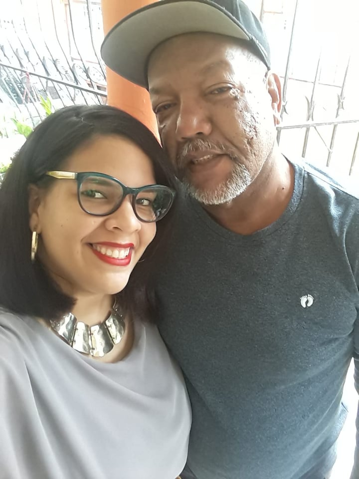
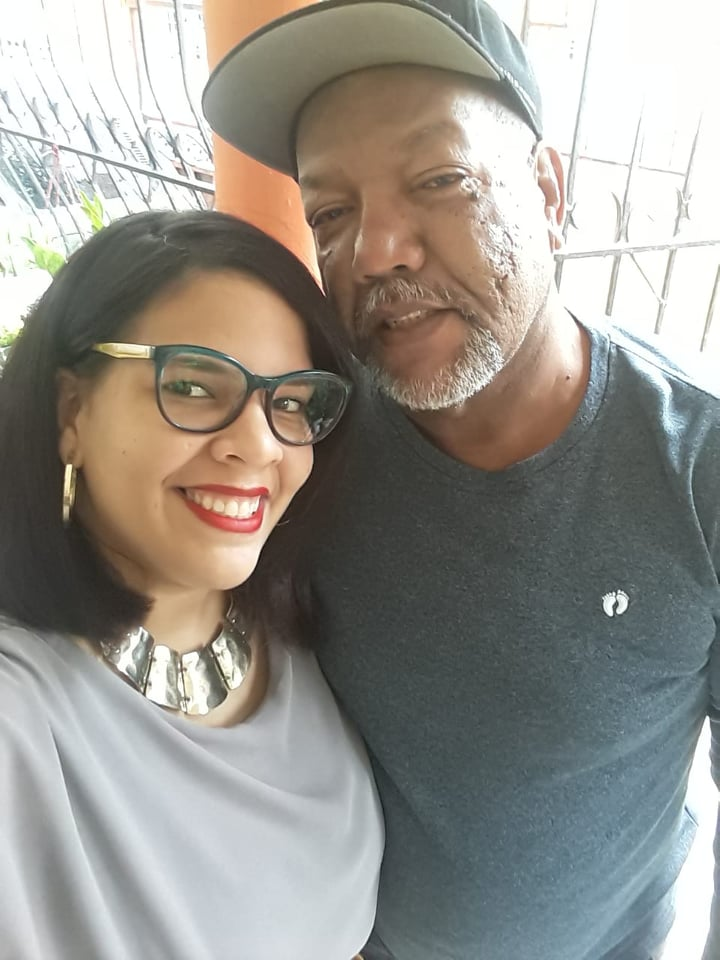
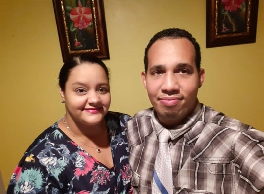
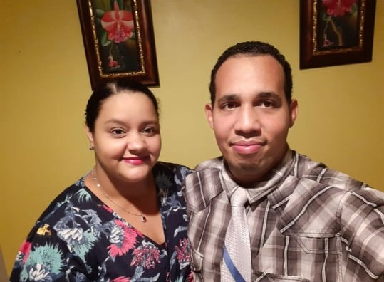

Quien soy?
Esta soy yo
Soy una persona apreciada por mi familia,no son estricto en el tema de selección a mis estudios, son empáticos.
Dado a eso, puedo tener mi vida equilibrada, a mi gusto, desarrollarme sin preocupación, paso a paso alcanzando mis metas. Cuales estoy muy felíz que estoy logrando con éxito al paso de los tiempos.
Que me hace unica?
Lo que me hicieron lo que soy
Lo que me hicieron lo que soy
 


 

Conozcan a los que influyeron, en lo que soy
Cosas que me hacen feliz
Cosas que me hacen feliz
- Me gusta todo lo que se hable de arte, pintura, felpas, cada vez que veo un diseño, creando un paisaje, letras o cualquier otra cosa, se prende mi botón de la curiosidad, lo creo con éxito.
- Me encanta la fotografía, no más bien, la disfruto en especial los paisajes naturales, lo que el ojo humano no alcanza ver, lo enfoco para tener mejor visión de la creación de mi padre celestial, Jehová Dios (Romanos 1:20)
- Me gusta la musica, vivo la música y hasta la bailo. Y si en un futuro tengo la oportunidad de aprender a tocar unos de mis instrumento favorito, como el Piano, la Guitarra, lo haré.
Cosas que me hacen enojar
Cosas que me hacen enojar
- Que no me salgan las cosas como yo quiero, me enojo conmigo misma
- Que me desesperen, con muchas cosas que haga a la vez
- Me enoja que interrumpen mi sueño, que me costó conseguir
Text de Personalidad


Text de Seleccion Multiple